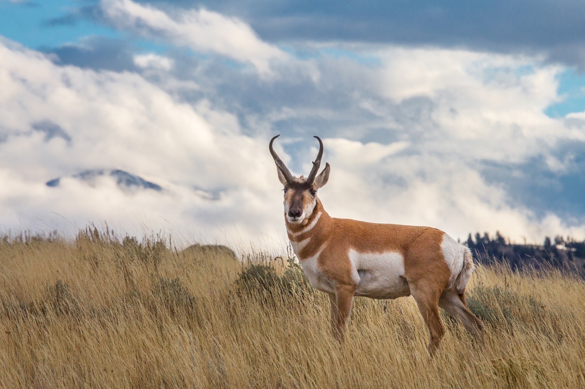
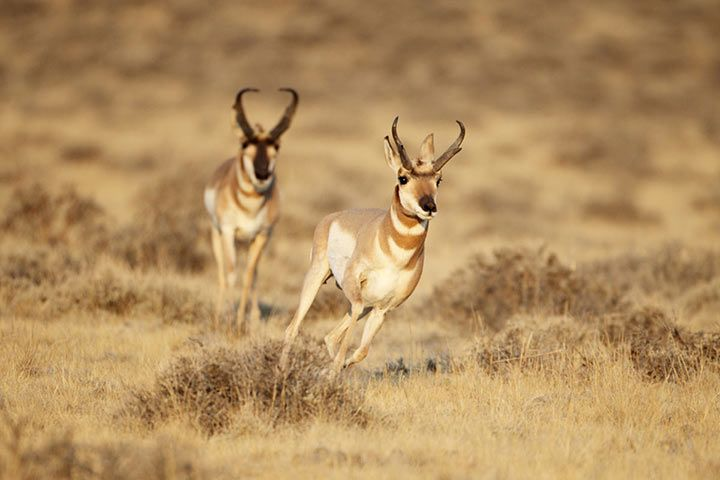
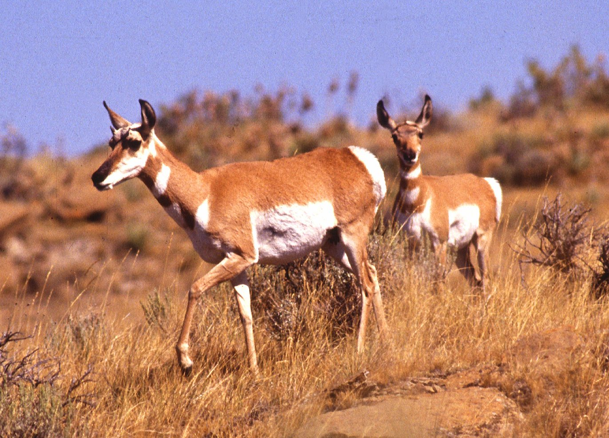

Gabelbock
| Verbreitung | Nordamerika |
| Lebensraum | offenes Gelände, Prärie |
| Maße | Kopf-Rumpflänge bis 150 cm Schulterhöhe bis 102 cm Gewicht 38–41 kg |
| Lebensweise | gesellig; sehr schneller und ausdauernder Läufer |
| Nahrung | Kräuter, Blätter, Kakteen, Gräser |
| Tragzeit | ca. 250 Tage |
| Zahl der Jungen pro Geburt | 1–2 |
| Höchstalter | bis 10 Jahre |
| Gefährdung | Bestände derzeit gut erholt |
Ernährung
Der Gabelbock ist stark wählerisch in seinem Nahrungsverhalten.
Generell ernährt er sich von verschiedenen Pflanzen,
vor allem von Kräutern, Blättern, Sprossen und Gräsern.
Häufig verbringt ein Tier nur relativ kurze Zeit,
etwa eine halbe Minute, an einer Nahrungsressource.
Vor allem im Frühjahr und zu Beginn des Sommers bevorzugt der Gabelbock Gras,
während er im Herbst und Winter Blätter an Stauden frisst.
Bedeutend sind hierbei vor allem Artemisia-Gewächse.
In Trockenlandschaften bilden zudem Kakteen einen Teil der Ernährungsgrundlage.
Verhalten
Der Gabelbock erreicht Geschwindigkeiten von über 86 Kilometern pro Stunde
und gehört somit zu den schnellsten Säugetieren in der Neuen Welt.
Auf der Suche nach Nahrung ziehen sie in weite Strecken umher.
Im Winter deutlich mehr als in den warmen Monaten.
Gabelböcke leben im Winter in zum Teil riesigen Herden von bis zu 1.000 Tieren.
Die Herden sind gemischt geschlechtlich und umfassen alle Altersklassen.
Im Frühjahr teilen sich die Herden in deutlich kleinere Gruppen,
die auch getrennt geschlechtlich sind.
Männchen sind zu dieser Zeit territorial und verteidigen
ihr Revier gegen Artgenossen erbittert.
Die Reviere können eine Größe von bis zu vier
Quadratkilometer aufweisen und werden mit Urin markiert.
Männliche Junggesellen bilden meist sogenannte Junggesellengruppen.
Auf der Flucht können sie Geschwindigkeiten von über 80 km/h erreichen.
Sie gelten damit als die schnellsten Säugetiere in Nordamerika.
Der Gabelbock erreicht Geschwindigkeiten von über 86 Kilometern pro Stunde
und gehört somit zu den schnellsten Säugetieren in der Neuen Welt.
Auf der Suche nach Nahrung ziehen sie in weite Strecken umher.
Im Winter deutlich mehr als in den warmen Monaten.
Gabelböcke leben im Winter in zum Teil riesigen Herden von bis zu 1.000 Tieren.
Die Herden sind gemischt geschlechtlich und umfassen alle Altersklassen.
Im Frühjahr teilen sich die Herden in deutlich kleinere Gruppen,
die auch getrennt geschlechtlich sind.
Männchen sind zu dieser Zeit territorial und verteidigen
ihr Revier gegen Artgenossen erbittert.
Die Reviere können eine Größe von bis zu vier
Quadratkilometer aufweisen und werden mit Urin markiert.
Männliche Junggesellen bilden meist sogenannte Junggesellengruppen.
Auf der Flucht können sie Geschwindigkeiten von über 80 km/h erreichen.
Sie gelten damit als die schnellsten Säugetiere in Nordamerika.
Körperbau
Der Gabelbock erreicht eine Körperlänge von 110 bis 150 Zentimeter,
eine Schulterhöhe von 80 bis 104 Zentimeter,
eine Schwanzlänge von sieben bis siebzehn Zentimeter sowie ein Gewicht von 40 bis 70 Kilogramm.
Männchen sind insgesamt größer und schwerer als Weibchen.
Das Fell ist ausgesprochen dicht und verfügt über eine wärmende Unterwolle und deutlich gröberes Oberhaar.
Es ist dorsal gelblichbraun bis rotbraun gefärbt.
Ventral und lateral ist das Fell deutlich heller, fast weiß gefärbt.
Der Hals ist vorne mit weißen Bändern gekennzeichnet.
Auch das Gesicht weist bis auf den Nasenrücken eine weiße Färbung auf.
Männchen lassen sich leicht an einer schwarzen Zeichnung in der Halsgegend erkennen.
Beide Geschlechter tragen Hörner, die im Kern nicht abgeworfen werden.



Der Gabelbock erreicht eine Körperlänge von 110 bis 150 Zentimeter,
eine Schulterhöhe von 80 bis 104 Zentimeter,
eine Schwanzlänge von sieben bis siebzehn Zentimeter sowie ein Gewicht von 40 bis 70 Kilogramm.
Männchen sind insgesamt größer und schwerer als Weibchen.
Das Fell ist ausgesprochen dicht und verfügt über eine wärmende Unterwolle und deutlich gröberes Oberhaar.
Es ist dorsal gelblichbraun bis rotbraun gefärbt.
Ventral und lateral ist das Fell deutlich heller, fast weiß gefärbt.
Der Hals ist vorne mit weißen Bändern gekennzeichnet.
Auch das Gesicht weist bis auf den Nasenrücken eine weiße Färbung auf.
Männchen lassen sich leicht an einer schwarzen Zeichnung in der Halsgegend erkennen.
Beide Geschlechter tragen Hörner, die im Kern nicht abgeworfen werden.